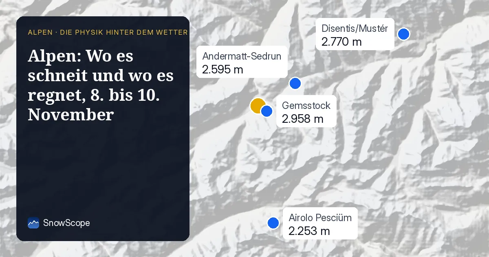

Alpen: Wo es schneit und wo es regnet, 8. bis 10. November
Ein mildes Wetttersystem bringt von Montag bis Mittwoch heftige Niederschläge in die Alpen, aber die Nullgradgrenze bleibt für Täler und tiefere Skipisten zu hoch. Die Schneefallgrenze wird voraussichtlich zwischen 2.190 und 2.850 m liegen, daher sollten Skifahrer unter 2.500 m mit Regen rechnen.
Die Live-Schneeprognose für Andermatt in der SnowScope-AppSchneehöhen, Pulverschnee-Alarme und 3D-Karte, gratis.

Schnee über 3.000 m, Regen unter 2.000 m
Die Schneekarte der Region zeigt, wie sich der Niederschlag während des Zeitraums mit der Höhe verändert. In 3.000 m Höhe und darüber fällt fast aller Regen als Schnee. In 2.500 m bildet sich ein Gemisch: etwa ein Drittel Schnee, ein Drittel nasser Schneeregen und ein Drittel Regen. Bis 2.000 m fällt fast neun Zehntel als Regen. Täler liegen weit unter dieser Grenze und sehen nur Regen.
Die mittlere Schneefallgrenze liegt während des Vorhersagezeitraums bei 2.540 m. Das bedeutet, dass Gletscher und hohe Grate frischen Schnee sammeln, während die Skipisten im 2.000–2.250-m-Band matschig oder nass bleiben.


Zahlen anzeigen
| Höhe (m) | Schnee % | Nasser Schnee / Schneeregen % | Regen % |
|---|---|---|---|
| 500 | 0 | 0 | 100 |
| 750 | 0 | 0 | 100 |
| 1.000 | 0 | 0 | 100 |
| 1.250 | 0 | 0 | 100 |
| 1.500 | 0 | 1 | 99 |
| 1.750 | 1 | 3 | 96 |
| 2.000 | 2 | 10 | 88 |
| 2.250 | 10 | 26 | 64 |
| 2.500 | 31 | 38 | 31 |
| 2.750 | 62 | 33 | 5 |
| 3.000 | 90 | 10 | 0 |
| 3.250 | 100 | 0 | 0 |
| 3.500 | 100 | 0 | 0 |
| 3.750 | 100 | 0 | 0 |
| 4.000 | 100 | 0 | 0 |
Wie die Temperatur die Grenze setzt
Die Lufttemperatur sinkt etwa 6,5 °C pro Kilometer Höhe. Wenn Niederschlag durch warme Luft fällt, schmilzt er, bevor er den Boden erreicht. Die Schneefallgrenze liegt ungefähr 300 m unter der Nullgradgrenze, weil fallender Schnee Zeit zum vollständigen Schmelzen braucht. Um diese Grenze herum bildet sich für etwa 150 m auf jeder Seite ein Band aus nassem Schneeregen oder schwerem, feuchtem Schnee.
In diesem Fall liegt die Nullgradgrenze während der feuchten Stunden in der Nähe von 2.730 m bei Andermatt. Die Schneefallgrenze liegt daher nahe bei 2.430 m. Südlich im Lugano-Tal steigt die Nullgradgrenze noch höher, auf 2.760 m, und drückt die Schneefallgrenze bis auf 2.460 m hinauf.

Zahlen anzeigen
| Datum | Andermatt (mm) | Altdorf (mm) | Lugano (mm) | Innsbruck (mm) |
|---|---|---|---|---|
| 8. November * | 0.0 | 0.0 | 0.3 | 0.0 |
| 9. November * | 6.2 | 11.3 | 0.3 | 2.4 |
| 10. November * | 8.5 | 16.6 | 3.6 | 6.9 |
| 11. November * | 2.3 | 0.3 | 1.5 | 0.0 |
| 12. November * | 10.0 | 7.8 | 17.9 | 7.1 |
Wann die Niederschläge ankommen
Die meisten Regen- und Schneefälle treten am 9. und 10. November auf. In Andermatt tritt der Höhepunkt des Feuchtetransports um die Mittagszeit am 10. November auf. Altdorf in den nördlichen Tälern erhält insgesamt 36 mm (meistens am 9.–10. November), während Innsbruck im Osten 16 mm bekommt. Andermatt selbst sammelt 27 mm, alles davon fällt über der Basishöhe von 1.444 m.
Der Wind während dieses Zeitraums kommt größtenteils aus Südwesten mit Geschwindigkeiten nahe 38–64 km/h, je nach Standort. Dies drückt Feuchte auf den südlichen und westlichen Flanken von Graten aufwärts.


Was das für jedes Tal bedeutet
Altdorf und andere nördliche Täler liegen in 450–580 m Höhe. Die Nullgradgrenze bleibt dort selbst auf ihrem tiefsten Stand über 2.100 m, daher fällt aller Niederschlag als Regen. Lugano im Süden liegt auf 300 m und ist noch wärmer; auch dort gibt es nur Regen. Keine dieser Lokationen wird Schnee aufbauen.
Andermatt liegt auf 2.963 m Höhe, hoch genug, dass Schnee auf seinen Oberhängen und Graten wahrscheinlich ist. Die oberen Gletscher werden gut innerhalb der Schneezone liegen. Das Mittelgebirge-Gelände zwischen 2.000 und 2.500 m wird die verworrene Zone sein, wo nasser Schnee, Schneeregen und Regen sich vermischen.
Risiken in der Frühjahrsaison
Nasser Schnee, der auf dünne bestehende Schneedecke fällt, kann unerwartet abrutschen. Wenn du über 2.500 m fährst, wo Schnee vorhergesagt wird, prüfe auf kürzliche Lawinenaktivität und lies das offizielle Bulletin, bevor du off-piste gehst. Schwerer, nasser Schnee ist schwerer als trockener Schnee und klebt an sich selbst; an einer Piste mit wenig Untergrund kann er halten, aber kann plötzlich abgehen, wenn sich die Bedingungen ändern.
Tiefere Skigebiete, die nur Regen sehen, werden jede frühe Schneedecke, die sie aufgebaut haben, wegwaschen. Die nächste Chance für Schneetiefe in der Region wird kommen, wenn sich die Luftmasse hinter diesem System abkühlt – wahrscheinlich in den Tagen nach 10. November, wenn eine Kaltfront hindurchzieht.
Was das für dich bedeutet
- Überprüfe die Live-Schneekarte erneut, bevor du losfährst; diese Vorhersage ist vom 7. November und Wettermuster können sich verschieben.
- Über 2.500 m halte Ausschau nach Nass-Schnee-Instabilität: konsultiere das offizielle Lawinenbulletin vor jedem Off-Piste-Skifahren.
- Skigebiete unter 2.000 m sehen meistens Regen. Wenn du dünne Schneedecke hast, erwarte Auswaschung und planen einen Besuch in kälteren Wochen ein.
- Wind aus Südwesten wird Lee-Hänge schwer mit nassem Schnee beladen; nordseitige Hänge könnten besser faren.
- Bring Schichten mit: die Luft ist mild (bis 18 °C im Altdorf-Tal), daher wärmst du dich auf, wenn du hinuntersteigst.
Zu diesen Zahlen
Die Schneehöhen der Skigebiete sind der meiste Schnee in den oberen Hängen am angegebenen Tag; es sind Schätzungen für eine Fläche, keine Messung an einem Punkt. Prognosen können sich ändern. Lies vor dem Freeriden immer den offiziellen Lawinenlagebericht.
Diesen Bericht zitieren
Für Forschung, Lehre oder Presse: Zahlen und Grafiken sind unter CC BY 4.0 mit dieser Quellenangabe frei nutzbar.
SnowScope (2026), Alpen: Wo es schneit und wo es regnet, 8. bis 10. November, https://snowscope.app/blog/de/2026/11/alps-where-it-snows-where-it-rains-8-10-november-2026.html, abgerufen am 2026-11-08
SnowScope (Atlas Labs). (2026, November 8). Alpen: Wo es schneit und wo es regnet, 8. bis 10. November. SnowScope snow reports. https://snowscope.app/blog/de/2026/11/alps-where-it-snows-where-it-rains-8-10-november-2026.html
BibTeX
@misc{snowscope2026alpswhereitsnowswhereitr,
author = {{SnowScope (Atlas Labs)}},
title = {Alpen: Wo es schneit und wo es regnet, 8. bis 10. November},
year = {2026},
month = nov,
howpublished = {\url{https://snowscope.app/blog/de/2026/11/alps-where-it-snows-where-it-rains-8-10-november-2026.html}},
note = {Published 2026-11-08 10:53 UTC; accessed 2026-11-08}
}· CC BY 4.0 · Methoden, Daten und Werkzeuge →
Andermatt folgen
Gratis: eine Nachricht, wenn Neuschnee kommt, und jeden Morgen die Vorhersage.
Weitere Schneeberichte

Davos und Klosters teilen sich sechs Skiberge. Ein Plan Tag für Tag, beginnend auf der Parsenn, mit dem, was 46 vergangene Winter unserer Schneehistorie über ihre Höhen sagen.

Wann Courchevel und die 3 Vallées buchen, welches Dorf wählen und wo der Schnee hält, geplant aus 46 vergangenen Wintern.

Cortina d'Ampezzo auf drei Arten: Tofana, Faloria-Cristallo und Cinque Torri-Lagazuoi, mit 46 Wintern Schneedaten auf drei Höhen.